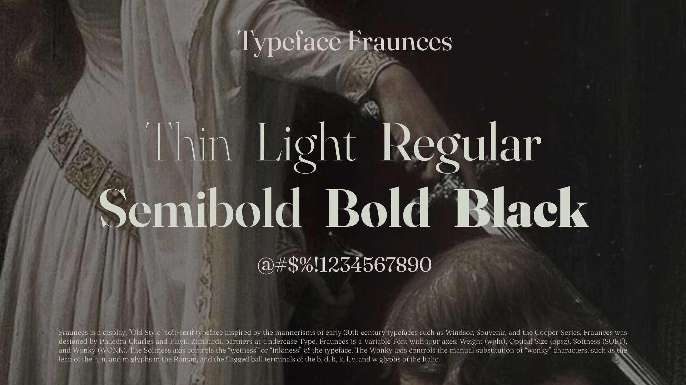
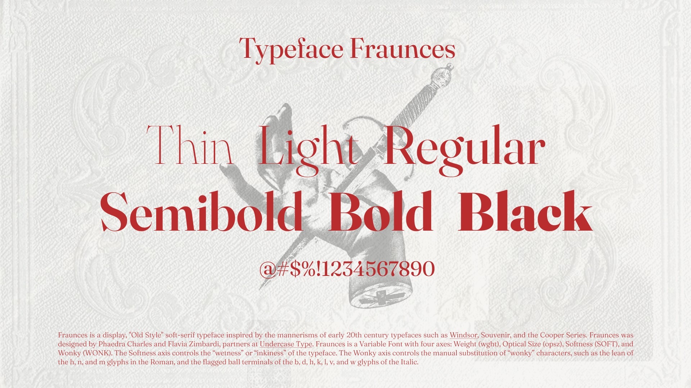
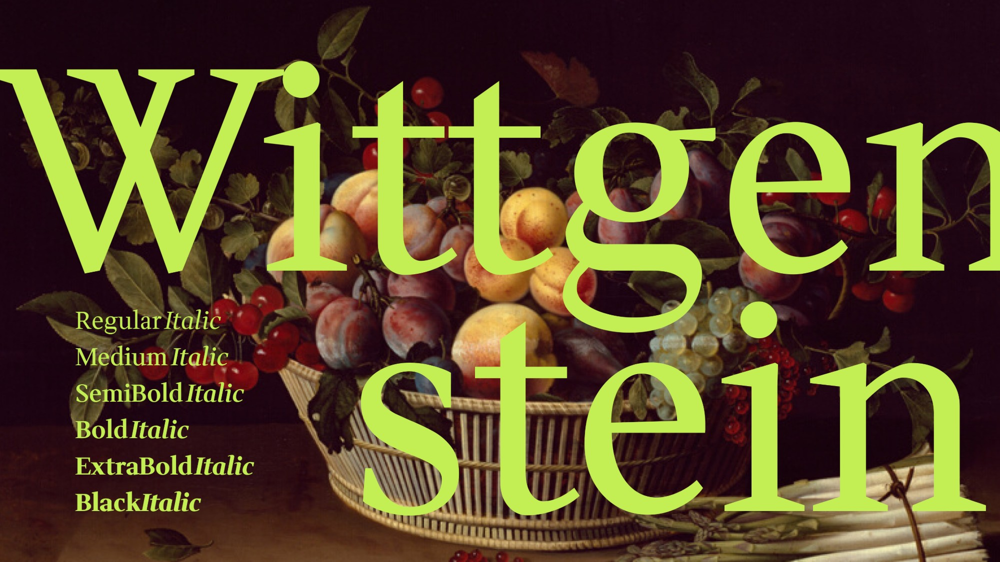

Miscellaneous projects & fun. Things I’ve made that won’t get a full case study.


Type specimen: Fraunces, in two moods.

Paintings, drawings and handmade things are on their way. Check back soon.


Type specimen: Fraunces, in two moods.

Paintings, drawings and handmade things are on their way. Check back soon.